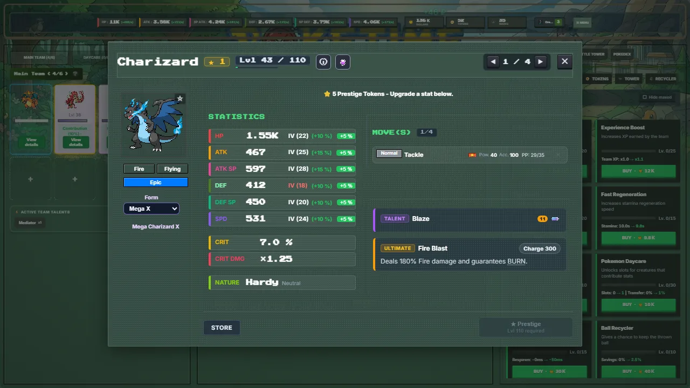

PokéTime – Jeu Pokémon Idle & Incrémental gratuit
Capture, entraîne et fais évoluer des Pokémon dans 9 régions, dans un jeu idle gratuit qui se joue directement dans ton navigateur. Ton équipe continue de combattre et de progresser, même quand tu n'es pas là.
▶ Jouer maintenantGratuit · Sans téléchargement · Sans compte · Français & anglais
Qu'est-ce que PokéTime ?
PokéTime est un jeu de fan Pokémon non officiel, de type idle / incrémental. Compose ton équipe, chasse les shinies, débloque de nouvelles zones et regarde tes chiffres exploser. Quelques minutes pour optimiser ta stratégie, puis laisse tourner le jeu.
9 régions à explorer
Voyage de Kanto à Paldea – Johto, Hoenn, Sinnoh, Unys, Kalos, Alola et Galar inclus – chacune avec ses zones, ses Pokémon et sa progression.
Combat & capture en idle
Combats en temps réel avec types, capacités et talents. Capture automatiquement, monte en niveau et fais évoluer tes Pokémon pendant que le jeu tourne tout seul.
Progression hors-ligne
Ferme l'onglet et reviens plus tard : PokéTime calcule tes gains hors-ligne et t'affiche un rapport de ce que tu as obtenu.
Tour des Champions & Battle Subway
Mets ton équipe à l'épreuve avec des défis de fin de jeu : dresseurs plus coriaces, règles spéciales et récompenses.
Expéditions & Team Rocket
Envoie tes Pokémon en expédition, accomplis des quêtes et affronte la Team Rocket pour des récompenses rares.
Collection & maîtrise
Fais éclore des œufs, complète ton Pokédex, débloque des synergies d'équipe et spécialise-toi avec un système de maîtrise à long terme.
Captures d'écran



FAQ
PokéTime est-il gratuit ?
Oui. PokéTime est entièrement gratuit, sans publicité et sans compte à créer.
Faut-il télécharger quelque chose ?
Non. Le jeu fonctionne dans ton navigateur sur ordinateur et mobile. Une application Windows optionnelle est aussi disponible.
Le jeu progresse-t-il quand je suis absent ?
Oui. C'est un jeu idle : ta progression est calculée hors-ligne et un rapport s'affiche à ton retour.
Où est stockée ma sauvegarde ?
En local dans ton navigateur. Tu peux exporter et importer ta sauvegarde au format JSON. Rien n'est envoyé à un serveur de jeu.
PokéTime est-il disponible dans d'autres langues ?
Le jeu est disponible en français et en anglais.
PokéTime est-il un jeu Pokémon officiel ?
Non. C'est un projet de fan non officiel, sans lien avec Nintendo, Game Freak ou The Pokémon Company.